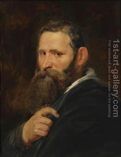

Makkot 20 - Other Prohibitions Punishable by Lashes - Cuts for the Dead
These include: one who makes a bald spot on his head in mourning for a dead person; one who rounds (shaves off) the corner of his head; one who destroy the corner of his beard with a razor; one who in anguish makes a single cut in his flesh over a deceased person.
One who makes a single cut over five dead people, or one who makes five cuts over one dead person - is liable for lashes for each dead person and for each cut.
For rounding the corners of the head one gets two sets of lashes, one for one side, and one for another.
For destroying the five corners of the beard, a person is liable to five sets of lashes. Rabbi Eliezer says that if he cut them as one, he deserves only one set. One is not liable unless he shaves his beard with a razor, but Rabbi Eliezer makes him liable even for shaving with planes.
Art: Peter Paul Rubens - Head Of A Bearded Man